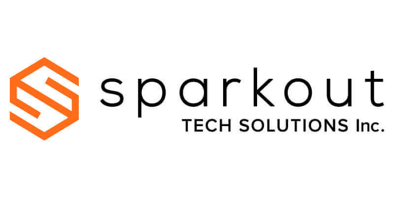
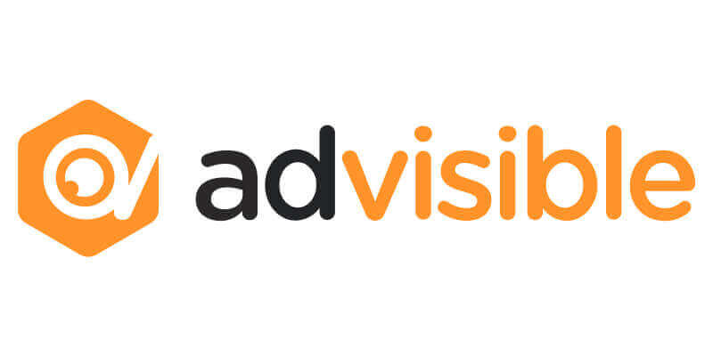
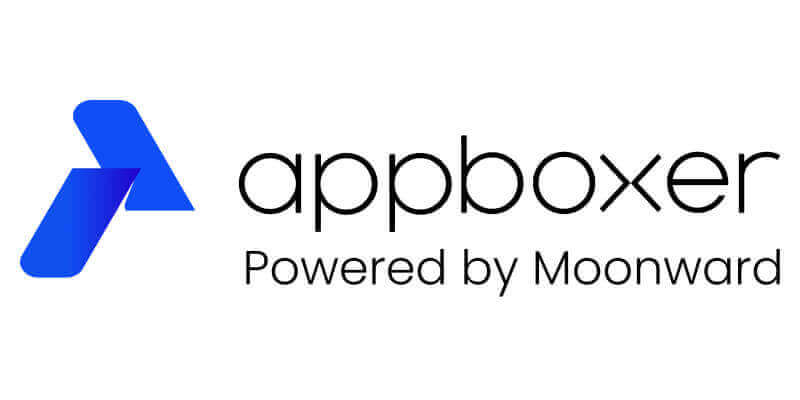
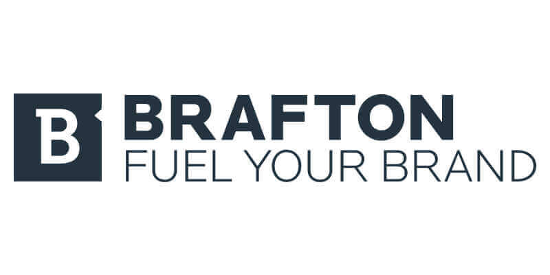
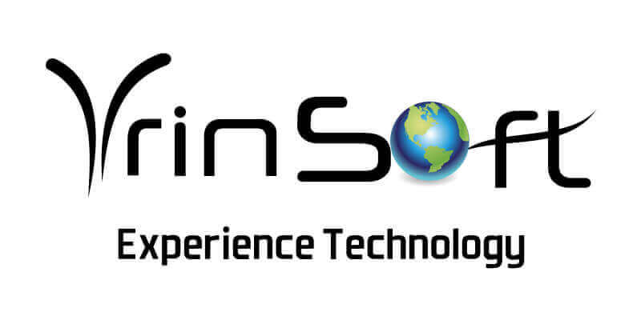
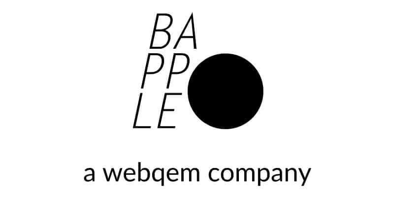
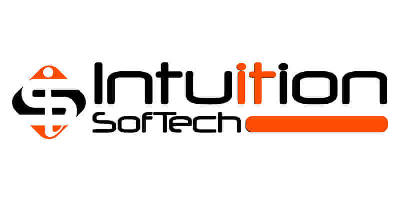
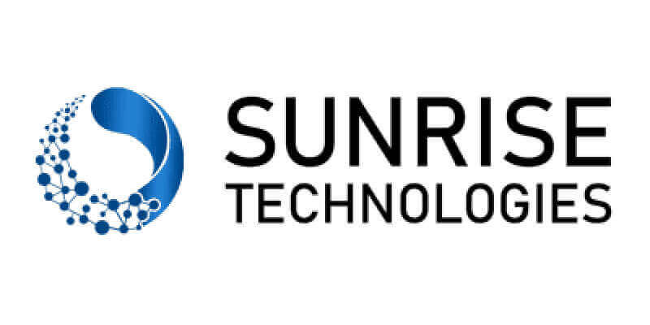
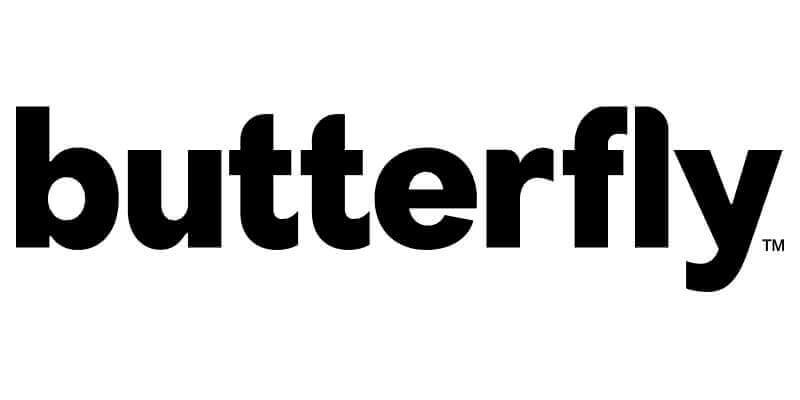

If you’ve reached this blog then you’ve probably decided to launch a new digital product. Or maybe you already have a digital product or website and you want to revamp your user experience to retain more customers. Now you need to pick from the best UIUX design agencies in Australia to get your project started but this can be a very big task.
Luckily, I’ve prepared a detailed list of the best agencies you can choose from in 2026 so that you can take your business ideas to new meaning. All the service providers I’ve mentioned here can give you great development services but some of them may be specializing in what you’re trying to accomplish so you can choose the suitable provider for your particular requirements.
Let’s get started.
Why UI UX Design Agencies Matter the Most in Today’s Business
UI UX design has become a major priority for today’s businesses among Aussies. This is because the users now expect fast, intuitive and visually clean digital experiences. As the competition rises across apps, websites, and SaaS platforms, popular brands mostly rely on UI UX agencies for enhanced user experience.
These agencies help organizations to reduce friction, improve conversions, and strengthen the brand perception to keep up with the current trends.
How to Choose the Right UI UX Design Agency in Australia
Before picking up a reliable partner, you have to cross-check and ensure the agency will bring value to your organization. Only the right team will understand your audience, industry, and long-term goals.
- Industry Expertise: Choose a company with domain knowledge to deliver better product insights and user flows.
- Flexible Pricing Models: Inspect if they offer project-based, hourly, and long-term partnership options.
- Post Design Support: Make sure they provide handoff, design system updates and iteration support.
- Strong Portfolio Fit: Ensure the chosen one’s previous work aligns with your design style and project scale.
Top 10 UIUX design Agencies in Australia
When you're a founder choosing the right UIUX design agencies in Australia to design your next project there are a few things that you should look for. To be able to help you create a stellar product you should make sure that they provide a quality service, have a strong team with the capability to ship projects at scale and a good track record. When looking at their experience you can look at their portfolio of works and see how they work and what it looks like.
While that’s for you to explore for this blog I’ve analyzed the UIUX design agencies in Australia and prepared a detailed write up on everything you need to know. This will include their services, what kind of projects they work on, what their major strengths are and which industries they service. At the end of this blog you will have a good idea about which agency would be suitable for you and how you can approach the process.
So, let's get right into our top 10 list for the best UIUX design agencies in Australia before you start your product development journey in 2026.
1. Sparkout Tech Solutions Inc.

Sparkout Tech Solutions Inc is an established provider of UI/UX design services and is well known for giving user centered solutions for businesses both small and large. Which means that regardless of whether you are a small business, a high growth startup or a large scale enterprise you can easily build your solutions with Sparkout Tech.
Additionally, Sparkout Tech works for clients in multiple industries and for multiple use cases as one of the leading UIUX design agencies in Australia. Sparkout’s solutions are being used by businesses worldwide in industries like fintech, healthcare, education, travel, logistics and sustainability.
Apart from this, Sparkout Tech is also a full cycle UX design agency that delivers solutions for web app and mobile app development, cloud solutions, blockchain dApps and AI/ML development services. Additionally, Sparkout’s capable team of 100+ professionals is well equipped and trained to deliver high quality solutions that are both functional and visually appealing. Sparkout Tech has a strong focus on creating user experience designs and user interfaces that are attractive and at the same time highly user friendly as one of the top UIUX design agencies in Australia.
Pros:
- Highly focused on providing tailored solutions to clients with a strong focus on user centric design as a UX design agency.
- Provides full cycle services with a team of 100+ professionals capable of delivering high quality and scalable solutions.
- Strong focus on emerging technologies like blockchain and AI/ML for intuitive designs that give users a great digital experience.
- Has a strong portfolio of working with global businesses in multiple industries and a proven track record creating great designs.
Cons:
- Since the services are quite comprehensive and premium the cost for development could be on the higher side if you have a complex project as one of the leading UIUX design agencies in Australia.
- Again, if you have a complex project then the timeline for designs could be on the longer side.
Website - www.sparkouttech.com
2. Advisible

Advisible is a well known UI UX design agency in Australia that provides high quality solutions for UI UX development, digital marketing and web development. When you look at their approach towards development it is highly client centric and they are known for working closely with their clients to deliver highly tailored solutions.
Additionally, since they are a fully design focused agency they make sure that your designs not only meet your business requirements but also provide a great user experience for your customers as one of the top UI UX design agencies in Australia. Apart from UI UX design services, Advisable provides you with a wide range of related services like SEO, PPC and social media marketing services.
Pros:
- If you’re looking for other services like digital marketing in addition to UIUX design services then Advisable may be a great option for you.
- They focus highly on designing solutions for you based on your individual business needs as a leading UI UX design agency.
- They are renowned for using the latest design trends and technologies to provide amazing user experience designs.
Cons:
- Since they have a comprehensive suite of services as one of the leading UIUX design agencies in Australia their costs may be on the higher side.
- If you have a very complex project with lots of screens and features then the turnaround times can be on the longer side.
- Because of the comprehensive nature of their services smaller projects may not find it suitable for the work that they need.
Website - www.advisible.com.au
3. App Boxer

App Boxer is a strong name in Australia as a premium mobile app development and UI UX design agency. As they are also a software development agency they are well known for creating very intuitive and user friendly interfaces.
They focus highly on working closely with their clients as one of the leading UIUX design agencies in Australia and make sure that their solutions stand out in both the design aspects as well as the functionality. One of their major highlights of App Boxer is that their design philosophy is based on understanding user behavior and tailoring the user experience to be seamless and enjoyable.
Pros:
- They specialize greatly in providing mobile UI/UX design services with a strong focus on giving your users a great user experience.
- Their major focus is on providing solutions for intuitive and highly user centric interfaces.
- They offer both design and mobile development services as one of the top UIUX design agencies in Australia.
Cons:
- Since they provide a very comprehensive service their costs may be on the higher end if you are a startup or small business.
- Since they do not focus on marketing and post launch support services you may need to find other providers for those purposes.
- If your project involves intricate designs and elements then the timelines could be on the longer end.
Website - www.appboxer.com
4. Brafton Inc

Brafton is one of the most globally known agencies that deals with digital marketing and design services. They are well known for being creative and designing user interfaces and experiences that are engaging.
As one of the leading UIUX design agencies in Australia they work with businesses of all sizes and can help you produce bespoke designs that align with your target audience. They have a very capable team that focuses highly on designing user friendly experiences that look aesthetically pleasing with a strong emphasis on enhancing user interaction and engagement. One of their highlighting aspects is that they follow a content first design approach where they use compelling content with UI/UX to create amazing user experiences.
Pros:
- They are highly focused on making user experience holistic by using compelling content along with UI/UX design.
- They are a very experienced team with a great global reputation as one of the UIUX design agencies in Australia.
- Their service offerings are pretty wide with content marketing and SEO services to complement their great designs.
Cons:
- Since they have a very comprehensive set of offerings the cost for their services could be on the higher side.
- If you’re trying to get designs for a highly customized digital product then their timelines could be on the longer side.
- Since they are focused on other services also apart from UI/UX design you have to decide if their bandwidth aligns with your requirements.
Website - www.brafton.com
5. Vrinsoft Au

Vrinsoft Au is another well known UI UX design agency with their focus being on creating user experience designs that are cutting edge. As one of the premium UIUX design agencies in Australia they have a very experienced team of designers that focuses on creating design solutions that are completely tailored to your business and the industry you work in.
When you look at their industries of expertise the list is also wide with sectors like e-commerce, healthcare, finance and much more. One of their major focuses is on creating visually appealing interfaces for your apps that are at the same time functional and enhance your user interaction and engagement. They implement the latest design trend and industry best practices for your app designs as one of the top UIUX design agencies in Australia so that your apps are both innovative and user friendly.
Pros:
- If you’re looking for design solutions for your apps that are industry specific then Vrinsoft is a great choice for you.
- Their offerings are wide and can provide you a complete suite of digital services.
- One of their major focuses is on creating modern user interfaces that implement the latest design trends.
Cons:
- If you’re a smaller business with a complex app in hand then their services may be on the expensive side.
- Similarly, if your app is complex then the design timelines in terms of delivery could also be on the longer side.
- As one of the leading UIUX design agencies in Australia their focus on marketing services may be limited post launch and you may have to see if that aligns with your requirements.
Website - www.vrinsoft.com.au
6. Cruro
Cruro is a highly recognized digital agency in Australia that focuses on providing modern UI/UX design services that are user centric. Their emphasis is high on designing interfaces that are engaging, visually appealing and intuitive. So they may be a great choice if you want to correct your app’s UI UX design mistakes and make it more engaging.
One of their major highlights as one of the top UIUX design agencies in Australia is that they work closely with their clients to understand their brand and audience. With this process they ensure that their UX designs align with your business’s core values and project goals. They have a wide range of expertise when it comes to the industries they work with like healthcare, retail and education.
Pros:
- They focus on creating interface designs that are highly user centric and visually engaging.
- If you’re looking for a highly tailored solution that aligns with specific industry needs then Cruro might be a great option for you.
- As one of the major UIUX design agencies in Australia their development process is very flexible and collaborative because they work using agile methodologies.
Cons:
- If you’re also looking for post launch marketing services along with the design then their offerings may not align with your needs.
- If you’re looking for a completely customized design solution for your app then the associated cost could be on the expensive side.
- Highly detailed designs for your apps may take longer to produce because of the comprehensive nature of their services.
Website - www.cruro.com.au
7. Bapple

Bapple is an entity based in Sydney and is known as one of the leading UIUX design agencies in Australia with a deep focus on creating human centric experiences. One of their major highlights is that their design process revolves around understanding your business, your audience and market trends to create intuitive, user friendly and visually appealing user interfaces.
Bapple has a very capable team that specializes in building highly tailored solutions for websites, mobile apps and other software. They have a high focus on creating user experience designs that are both functional and engaging. Another great thing about their process is that they are research driven and include feedback loops and a flexible design process to refine your products as one of the premier UIUX design agencies in Australia.
Pros:
- Their focus is very high on creating designs that are very user friendly thanks to a research driven approach.
- Their offerings are also wide and apart from UI/UX design services they provide branding and digital strategy services.
- Their solutions are highly tailored to their clients’ business and include solutions for both mobile and web platforms.
Cons:
- Because of the comprehensive approach they take for projects the costs for their services may be on the higher end.
- Their services are very in depth and tailored as one of the leading UIUX design agencies in Australia which may mean that it could take longer for you to get the delivery of your designs.
- Their focus on services for digital marketing and post launch support is limited and you have to consider if that aligns with your needs.
Website - www.bapple.com.au
8. Intuition SofTech

Intuition SofTech like their name is a well known agency in Australia that specializes in creating intuitive user experience designs along with other digital services. One great thing about their service is that they focus highly on building functional digital products that are aesthetically pleasing and at the same time give a great user experience.
As one of the trusted UIUX design agencies in Australia Intuition SofTech takes a very collaborative approach when it comes to working on your project. Through this they work closely with you to understand the nature of your business and your target audience to build highly tailored solutions. This approach is not just about creating tailored products but also to make sure that the designs match your brand identity. Additionally, they can also provide you with web app development and mobile app development services as a full cycle services agency.
Pros:
- As one of the top tier UIUX design agencies in Australia Intuition SofTech is known for their collaborative approach that incorporates client feedback throughout their design process.
- If you’re looking for a full cycle agency that can provide you both user experience design and app development services they are a good choice.
- They are well known for creating design solutions that align with your business goals and user needs.
Cons:
- If you’re a startup or a small business their costs may be on the expensive end because of the detailed nature of services.
- Since they are one of the detailed oriented UIUX design agencies in Australia if you have a complex project that needs a very detailed user experience design then the timelines can be on the longer end.
- They are majorly focused on software engineering and design so the scope of post launch support services may be limited if you’re looking for that.
Website - www.intuitionsoftech.com.au
9. Sunrise Technologies

Sunrise Technologies is another well known agency from Australia and they provide full service offerings for digital solutions. They are experts in UI UX design and at the same time they provide services for web app development and mobile app development.
As one of the top trusted UIUX design agencies in Australia Sunrise Technologies focuses highly on creating designs that show a unique blend of intuitiveness, engagement for users and better accessibility. One of their highlighting features is that they use research to understand user behavior and interaction patterns to create experiences that enhance user satisfaction and growth. As you may have already figured out, their design process involves thorough research, high fidelity prototyping and testing to ensure that your digital product meets the needs of your business as well as your customers.
Pros:
- They provide a host of other services as one of the leading UIUX design agencies in Australia which includes marketing and content strategy.
- Their design process is highly based on research and provides interfaces that are user centric.
- One of their major focuses is on creating designs that combine user engagement and accessibility.
Cons:
- Since their services are broad and at the same time in depth their costs may be expensive if you’re a smaller business.
- Since their research process and testing process are intensive for the designs they provide their timelines could be on the longer end.
- If you’re also looking for other design services apart from user experience their focus may be limited.
Website - www.sunrisetechs.com
10. Butterfly

Butterfly is one of the top UIUX design agencies in Australia and is based in the heart of Merlbourne. They are known for their top notch UI UX design services and have in depth expertise in creating innovative and creative designs. One of the main focuses is to craft digital experiences for your apps that attract users.
As they take a user centric approach to design they implement in depth research and testing to make sure that your final designs align with your target audience. Additionally, they are also known for providing solutions holistically which means that they offer web design, mobile app design and product development as one of the leading UIUX design agencies in Australia. Butterfly is also known for involving their clients in the design and development process so that the final resulting product not only looks good but also is highly functional.
Pros:
- They put a lot of emphasis on their designs being user centric and design driven.
- Their services are known to be end to end and includes both digital strategy and support.
- They are well known for involving their clients in the design and development process to make sure that your digital products are tailored to your business goals and user expectations.
Cons:
- As one of the top UIUX design agencies in Australia they provide a premium set of services whose costs for development can be on the more expensive side.
- If you’re a smaller business with a simple app to build and simple designs then their services may be beyond what you require immediately in terms of scale.
- For more complex projects that may require in depth research the timeline could be on the longer end.
Website - www.butterfly.com.au
That’s all we have today for the best UIUX design agencies in Australia
If you’ve come this far then you probably know everything you need to know about the top UIUX design agencies in Australia before starting your next project. The story of UI UX is age old but not many founders give it the attention it needs. However, creating a great experience for your app users whether it's on mobile, the web or desktop is key to making your apps a success. I’ve included some great picks in this blog and all of these agencies provide top notch services. But as you may have figured out some service providers focus on certain areas and other on other areas. It's up to you to decide which agency to go with based on the nature of your business and your project goals.
If you find that this blog helped you out in your journey consider sharing it with someone that can make use of this information.